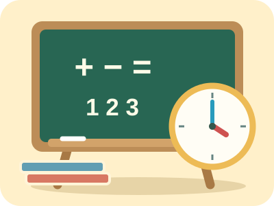

Samen aan het bord
Wiskanjers instructielessen
2de leerjaar
Kies een blok en open je bordles.
Blok 1
Voor dit blok staat er nog geen bordles klaar.

Samen aan het bord
Kies een blok en open je bordles.
Voor dit blok staat er nog geen bordles klaar.